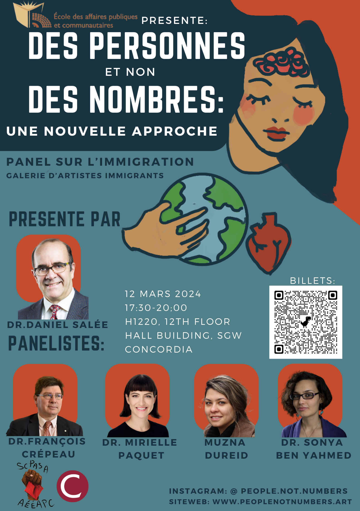

PEOPLE NOT NUMBERS

People not Numbers: A New Approach is a student-found community project that attempts to introduce humanitarian and non-numerical thinking regarding the modern discourse surrounding immigration. Our project is committed to the breakdown of silos both between immigrants and citizens as well as between academia, groundwork, and art. Through providing critical information, highlighting immigrant artists within our community, and introducing resources we hope to create a chain reaction in which we empower and mobilize others during the rise of anti-international student and immigrant populism in Canada. Our website, panel, and gallery are all made with these ideals in mind.
Panel and gallery:
H1220, 12 floor
Hall building, SGW campus Concordia
March 12, 2024